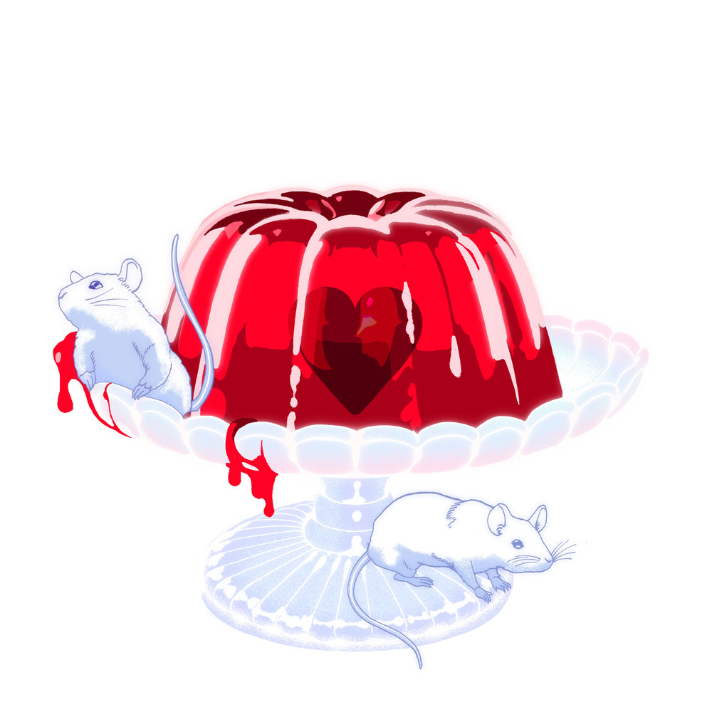

안녕하세요 라보엠입니다.
저는 요맘때 비염으로 참 힘든 시기입니다. 이럴 때는 에너지 보충을 위해 간식을 찾게 되는데요, 초콜릿도 도움이 되지만 달디 단 양갱도 참 좋아합니다. 장기하가 이 양갱을 주제로 노래를 만들고, 가수 비비가 불렀는데 이게 또 히트를 치고 있습니다. 참 놀라운 세상이죠.
비비 밤양갱 장기하 작사 작곡
뮤비에서는 이 곡을 쓴 장기하와 비비가 연인으로 등장해 헤어지는 순간을 그리고 있습니다 .
밤양갱 가사
떠나는 길에 네가 내게 말했지
너는 바라는 게 너무나 많아
잠깐이라도 널 안 바라보면
머리에 불이 나버린다니까
나는 흐르려는 눈물을 참고
하려던 얘길 어렵게 누르고
그래, 미안해라는 한 마디로
너랑 나눈 날들 마무리했었지
달디달고, 달디달고, 달디단, 밤양갱, 밤양갱
내가 먹고 싶었던 건, 달디단, 밤양갱, 밤양갱이야
떠나는 길에 네가 내게 말했지
너는 바라는 게 너무나 많아
아냐, 내가 늘 바란 건 하나야
한 개뿐이야, 달디단, 밤양갱
달디달고, 달디달고, 달디단, 밤양갱, 밤양갱
내가 먹고 싶었던 건, 달디단, 밤양갱, 밤양갱이야
상다리가 부러지고
둘이서 먹다 하나가 쓰러져버려도
나라는 사람을 몰랐던 넌
떠나가다가 돌아서서 말했지
너는 바라는 게 너무나 많아
아냐, 내가 늘 바란 건 하나야
한 개뿐이야, 달디단, 밤양갱
